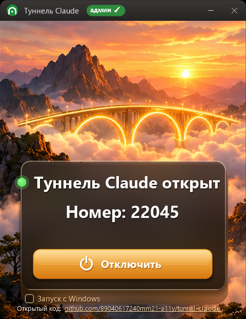
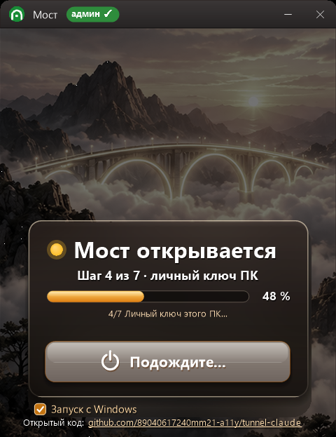

Одна программа для двух задач. Она проверяет компьютер встроенным Защитником Windows: ничего не удаляет, только даёт отчёт. И даёт специалисту безопасно зайти, чтобы обслужить 1С. Клиент сам включает и выключает доступ, каждый вход записывается в журнал. Код открыт.


Одно окно и одна кнопка. Крестик сворачивает в трей, «Запуск с Windows» включён по умолчанию. Номер на снимке — демонстрационный.
Защитник Windows проверяет ПК фоном, даже после перезагрузки. Ничего не удаляет и не трогает, только составляет список находок.
ПК сам соединяется с сервером. Внешний IP может меняться, роутер настраивать не нужно.
Большие кнопки ВКЛЮЧИТЬ / ВЫКЛЮЧИТЬ / ПОЧИНИТЬ и понятный статус: работает или нет и почему.
Каждый вход записывается в файл на рабочем столе. Его поймёт и человек, и любой ИИ.
Пароли выключены. Ключ каждого ПК открывает только свой порт на сервере, и больше ничего.
Сам ставит OpenSSH и исправляет права на ключи. Знает про 360 Total Security и ПК без DNS.
sshd_tunnel, пользователи claude_tunnel и claude_enroll.profile.example.ini в profile.ini. Впишите свой сервер, отпечаток сервера и ключи специалистов.powershell -File build.ps1. Нужен только .NET 4, он есть в Windows 10/11.Лицензия MIT: пользуйтесь, меняйте, раздавайте своим клиентам.